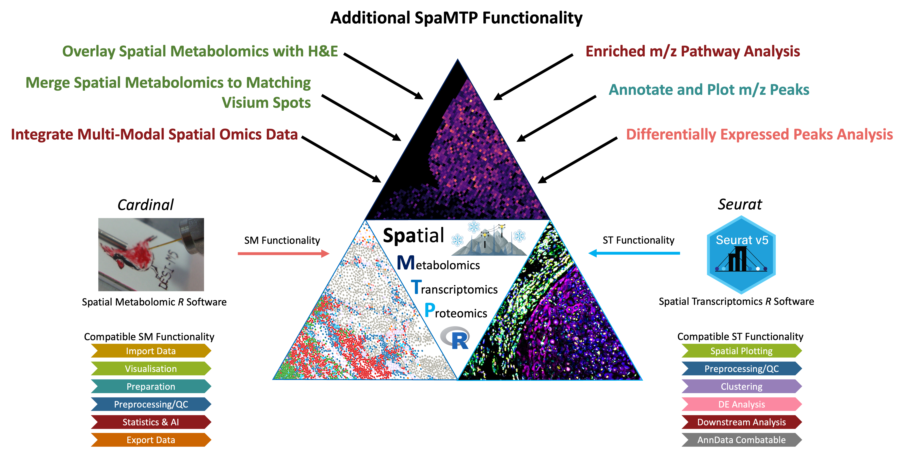

New R-based User-Friendly Spatial Metabolomic, Transcriptomic, and Proteomic Data Analysis Tool
SpaMTP is an R based wrapper package for Seurat for the analysis of spatial metabolomic data. This user-freindly package contains various function for the analysis, integration and visalisation of multi-modal datasets, in particularly focusing on metabolomic/transcriptomics integration. This package includes various functions to preform pre-processing, spatial visualisation, various down-stream biological centered analyses, data integration and data export of Spatial Metabolomic data. In addition, this package has the ability to use both Cardinal (Spatial Metabolomic based software) and Seurat (Spatial Transcriptomic based software) functions.

Installation
You can install the current version of SpaMTP from GitHub with:
if (!require("devtools", quietly = TRUE))
install.packages("devtools")
devtools::install_github("BiomedicalMachineLearning/SpaMTP")Installing with conda
Below is an example of how to set up SpaMTP using a conda environment
conda create -n SpaMTP -c conda-forge r-base=4.3.3 r-essentials r-devtools
conda activate SpaMTPWithin the SpaMTP environment open R and install SpaMTP packages
devtools::install_github("BiomedicalMachineLearning/SpaMTP")Possible Installiation Errors
Cairo failed to install
checking if R was compiled with the RConn patch... no
checking for cairo.h... no
configure: error: Cannot find cairo.h! Please install cairo (http://www.cairographics.org/) and/or set CAIRO_CFLAGS/LIBS correspondingly.
ERROR: configuration failed for package ‘Cairo’check these libraries exist:
conda install conda-forge::r-cairoThis should resolve any issues. Rerun:
BiocManager::install("scater")Cardinal Failed to install
ERROR: dependency ‘EBImage’ is not available for package ‘Cardinal’
BiocManager::install("EBImage")
fftwtools.c:28:9: fatal error: fftw3.h: No such file or directory
28 | #include<fftw3.h>
| ^~~~~~~~~If EBImage failed to installed it ist most likely due to an issue with the installation of fftwtools
Try:
conda config --add channels conda-forge
conda config --set channel_priority strict
conda install r-fftwtoolsElse try:
conda install bioconda::r-fftwtools
conda install conda-forge::fftwTry in R:
if (!require("BiocManager", quietly = TRUE)) #Check if BiocManager is installed
install.packages("BiocManager")
BiocManager::install("fftwtools")If none of the above methods resolve instiallation issues, install Cardinal directly through conda:
conda install bioconda::bioconductor-cardinal rgoslin Failed to install
If rgoslin fails to install please head to their github. Alternative, you can try installing through BiocManager or mamba shown below:
BiocManager::install("rgoslin")or
mamba install bioconductor-rgoslinFor other issue please flag on github under Issues